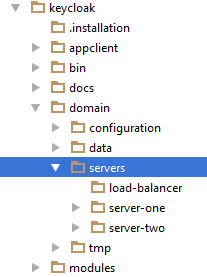

<profiles>
<profile name="auth-server-standalone">
...
</profile>
<profile name="auth-server-clustered">
...
</profile>Domain Clustered Mode
Domain mode is a way to centrally manage and publish the configuration for your servers.
Running a cluster in standard mode can quickly become aggravating as the cluster grows in size. Every time you need to make a configuration change, you have perform it on each node in the cluster. Domain mode solves this problem by providing a central place to store and publish configuration. It can be quite complex to set up, but it is worth it in the end. This capability is built into the Wildfly Application Server which Keycloak derives from.
|
Note
|
The guide will go over the very basics of domain mode. Detailed steps on how to set up domain mode in a cluster should be obtained from the JBoss EAP Administration and Configuration Guide. |
Here are some of the basic concepts of running in domain mode.
- domain controller
-
The domain controller is a process that is responsible for storing, managing, and publishing the general configuration for each node in the cluster. This process is the central point from which nodes in a cluster obtain their configuration.
- host controller
-
The host controller is responsible for managing server instances on a specific machine. You configure it to run one or more server instances. The domain controller can also interact with the host controllers on each machine to manage the cluster. To reduce the number of running process, a domain controller also acts as a host controller on the machine it runs on.
- domain profile
-
A domain profile is a named set of configuration that can be used by a server to boot from. A domain controller can define multiple domain profiles that are consumed by different servers.
- server group
-
A server group is a collection of servers. They are managed and configured as one. You can assign a domain profile to a server group and every service in that group will use that domain profile as their configuration.
In domain mode, a domain controller is started on a master node. The configuration for the cluster resides in the domain controller. Next a host controller is started on each machine in the cluster. Each host controller deployment configuration specifies how many Keycloak server instances will be started on that machine. When the host controller boots up, it starts as many Keycloak server instances as it was configured to do. These server instances pull their configuration from the domain controller.
Domain Configuration
Various other chapters in this guide walk you through configuring various aspects like databases, HTTP network connections, caches, and other infrastructure related things. While standalone mode uses the standalone.xml file to configure these things, domain mode uses the …/domain/domain.xml configuration file. This is where the domain profile and server group for the Keycloak server are defined.
domain.xml

|
Warning
|
Any changes you make to this file while the domain controller is running will not take effect and may even be overwritten by the server. Instead use the the command line scripting or the web console of Wildfly. See the JBoss EAP Administration and Configuration Guide for more information. |
Let’s look at some aspects of this domain.xml file. The auth-serve-standalone and auth-server-clustered profile XML block is where you are going to make the bulk of your configuration decisions.
You’ll be configuring things here like network connections, caches, and database connections.
auth-server profile
The auth-server-standalone profile is a non-clustered setup. The auth-server-clustered profile is the clustered setup.
If you scroll down further, you’ll see various socket-binding-groups defined.
socket-binding-groups
<socket-binding-groups>
<socket-binding-group name="standard-sockets" default-interface="public">
...
</socket-binding-group>
<socket-binding-group name="ha-sockets" default-interface="public">
...
</socket-binding-group>
<!-- load-balancer-sockets should be removed in production systems and replaced with a better softare or hardare based one -->
<socket-binding-group name="load-balancer-sockets" default-interface="public">
...
</socket-binding-group>
</socket-binding-groups>This config defines the default port mappings for various connectors that are opened with each
Keycloak server instance. Any value that contains ${…} is a value that can be overriden on the command line
with the -D switch, i.e.
$ domain.sh -Djboss.http.port=80
The definition of the server group for Keycloak resides in the server-groups XML block. It specifies the domain profile
that is used (default) and also some default boot arguments for the Java VM when the host controller boots an instance. It also
binds a socket-binding-group to the server group.
server group
<server-groups>
<!-- load-balancer-group should be removed in production systems and replaced with a better softare or hardare based one -->
<server-group name="load-balancer-group" profile="load-balancer">
<jvm name="default">
<heap size="64m" max-size="512m"/>
</jvm>
<socket-binding-group ref="load-balancer-sockets"/>
</server-group>
<server-group name="auth-server-group" profile="auth-server-clustered">
<jvm name="default">
<heap size="64m" max-size="512m"/>
</jvm>
<socket-binding-group ref="ha-sockets"/>
</server-group>
</server-groups>Host Controller Configuration
Keycloak comes with two host controller configuration files that reside in the …/domain/configuration/ directory: host-master.xml and host-slave.xml. host-master.xml is configured to boot up a domain controller, a load balancer, and one Keycloak server instance. host-slave.xml is configured to talk to the domain controller and boot up one Keycloak server instance.
|
Note
|
The load balancer is not a required service. It exists so that you can easily test drive clustering on your development machine. While usable in production, you have the option of replacing it if you have a different hardware or software based load balancer you want to use. |
Host Controller Config

To disable the load balancer server instance, edit host-master.xml and comment out or remove the "load-balancer" entry.
<servers>
<!-- remove or comment out next line -->
<server name="load-balancer" group="loadbalancer-group"/>
...
</servers>Another interesting thing to note about this file is the declaration of the authentication server instance. It has
a port-offset setting. Any network port defined in the domain.xml socket-binding-group or the server group
will have the value of port-offset added to it. For this example domain setup we do this so that ports opened by
the load balancer server don’t conflict with the authentication server instance that is started.
<servers>
...
<server name="server-one" group="auth-server-group">
<socket-bindings port-offset="150"/>
</server>
</servers>Server Instance Working Directories
Each Keycloak server instance defined in your host files creates a working directory under …/domain/servers/{SERVER NAME}. Additional configuration can be put there, and any temporary, log, or data files the server instance needs or creates go there too. The structure of these per server directories ends up looking like any other Wildfly booted server.
Working Directories

Keycloak JSon Configuration
Unfortunately, there is no centralized way to manage the keycloak.json file. You’ll have to manage a copy of this file in every server instance you deploy. This file must exist in the _…/domain/servers/{SERVER NAME}/configuration directory.
JSON Configuration

Domain Boot Script
When running the server in domain mode, there is a specific script you need to run to boot the server depending on your operating system. These scripts live in the bin/ directory of the server distribution.
Domain Boot Script

To boot the server:
Linux/Unix
$ .../bin/domain.sh --host-config=host-master.xmlWindows
> ...\bin\domain.bat --host-config=host-slave.xmlWhen running the boot script you will need pass in the host controlling configuration file you are going to use via the
--host-config switch.
Clustered Domain Example
You can test drive clustering using the out-of-the-box domain.xml configuration. This example domain is meant to run on one machine and boots up:
-
a domain controller
-
an HTTP load balancer
-
2 Keycloak server instances
To simulate running a cluster on two machines, you’ll run the domain.sh script twice to start two separate
host controllers. The first will be the master host controller which will start a domain controller, an HTTP load balancer, and one
Keycloak authentication server instance. The second will be a slave host controller that only starts
up an authentication server instance.
Setup Slave Connection to Domain Controller
Before you can boot things up though, you have to configure the slave host controller so that it can talk securely to the domain
controller. If you do not do this, then the slave host will not be able to obtain the centralized configuration from the domain controller.
To set up a secure connection, you have to create a server admin user and a secret that
will be shared between the master and the slave. You do this by running the …/bin/add-user.sh script.
When you run the script select Management User and answer yes when it asks you if the new user is going to be used
for one AS process to connect to another. This will generate a secret that you’ll need to cut and paste into the
…/domain/configuration/host-slave.xml file.
Add App Server Admin
$ add-user.sh
What type of user do you wish to add?
a) Management User (mgmt-users.properties)
b) Application User (application-users.properties)
(a): a
Enter the details of the new user to add.
Using realm 'ManagementRealm' as discovered from the existing property files.
Username : admin
Password recommendations are listed below. To modify these restrictions edit the add-user.properties configuration file.
- The password should not be one of the following restricted values {root, admin, administrator}
- The password should contain at least 8 characters, 1 alphabetic character(s), 1 digit(s), 1 non-alphanumeric symbol(s)
- The password should be different from the username
Password :
Re-enter Password :
What groups do you want this user to belong to? (Please enter a comma separated list, or leave blank for none)[ ]:
About to add user 'admin' for realm 'ManagementRealm'
Is this correct yes/no? yes
Added user 'admin' to file '/.../standalone/configuration/mgmt-users.properties'
Added user 'admin' to file '/.../domain/configuration/mgmt-users.properties'
Added user 'admin' with groups to file '/.../standalone/configuration/mgmt-groups.properties'
Added user 'admin' with groups to file '/.../domain/configuration/mgmt-groups.properties'
Is this new user going to be used for one AS process to connect to another AS process?
e.g. for a slave host controller connecting to the master or for a Remoting connection for server to server EJB calls.
yes/no? yes
To represent the user add the following to the server-identities definition <secret value="bWdtdDEyMyE=" />Now cut and paste the secret value into the …/domain/configuration/host-slave.xml file as follows:
<management>
<security-realms>
<security-realm name="ManagementRealm">
<server-identities>
<secret value="bWdtdDEyMyE="/>
</server-identities>Run the Boot Scripts
Since we’re simulating a two node cluster on one development machine, you’ll run the boot script twice:
Boot up master
$ domain.sh --host-config=host-master.xmlBoot up slave
$ domain.sh --host-config=host-slave.xmlTo try it out, open your browser and go to http://localhost:8080/auth